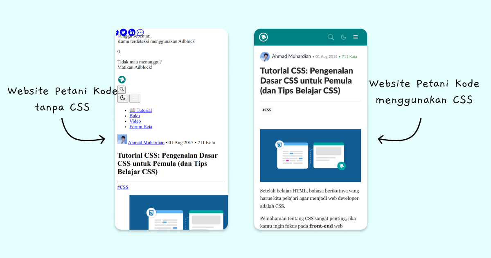

Apa itu CSS?
CSS (Cascading Style Sheets) adalah suatu aturan untuk mengatur tampilan web sehingga terlihat lebih menarik dan indah.
Dengan CSS, kita dapat mengatur layout (tata letak), warna, font, garis, background, animasi, dan lain-lain.
Contoh kita ambil dari website PetaniKode:

Tanpa CSS, website Petani Kode terlihat jelek dan tidak tertata. Sedangkan jika menggunakan CSS, tampilannya jadi lebih bagus dan rapi.